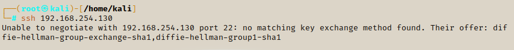

Enumerating SSH
Continuing fron the Kioptrix challenge, we have enumerated the HTTP & SMB ports, now we will now enumerate the SSH port.
First we will make a note of the version number of the SSH.
We will attempt to access a connection with the SHH, if we get a connection we will be able to get information to see what is running.
To try an establish a connection we simply write ssh followed by the IP address.
ssh 192.168.254.130

ssh 192.168.254.130 would be the normal syntax for a new ssh, but because this one is old we have to add the shh keys with it - these are like hashed passwords for each IP address with ssh.
You may come across an old SSH so follow the same steps.

Rewrite the shh and IP and include -oKexAlgorithms=+ and then attach the section highlighted to the end. Once that is done we need add an extra tag - -oHostKeyAlgorithms=+ssh-dss. We will still get an error message with different tags to choose from.
ssh 192.168.254.130 -oKexAlgorithms=+diffie-hellman-group1-sha1 -oHostKeyAlgorithms=+ssh-dss

ssh 192.168.254.130 -oKexAlgorithms=+diffie-hellman-group1-sha1 -oHostKeyAlgorithms=+ssh-dss -c aes128-cbc

We have gained access but could but needed a password
In this example we could not get any data from a connection. Sometimes you will get a banner telling you what version the SSH is using and potentially who/what company built it etc.